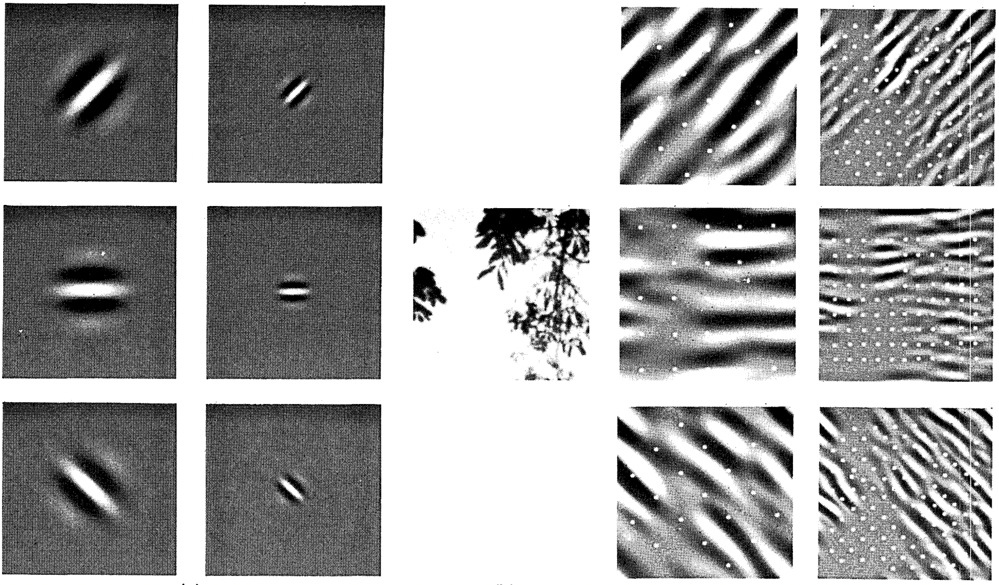

Convolutions for Images
Now that we understand how convolutional layers work in theory, we are ready to see how they work in practice. Building on our motivation of convolutional neural networks as efficient architectures for exploring structure in image data, we stick with images as our running example.
using Pkg
Pkg.activate("d2lai") Activating project at `~/Projects/D2L/d2lai`using d2lai, FluxRecall that strictly speaking, convolutional layers are a misnomer, since the operations they express are more accurately described as cross-correlations. Based on our descriptions of convolutional layers in :numref:sec_why-conv, in such a layer, an input tensor and a kernel tensor are combined to produce an output tensor through a (cross-correlation operation.)
Let's ignore channels for now and see how this works with two-dimensional data and hidden representations. In :numref:fig_correlation, the input is a two-dimensional tensor with a height of 3 and width of 3. We mark the shape of the tensor as $3 \times 3$ or ($3$, $3$). The height and width of the kernel are both 2. The shape of the kernel window (or convolution window) is given by the height and width of the kernel (here it is $2 \times 2$).
 :label:
:label:fig_correlation
In the two-dimensional cross-correlation operation, we begin with the convolution window positioned at the upper-left corner of the input tensor and slide it across the input tensor, both from left to right and top to bottom. When the convolution window slides to a certain position, the input subtensor contained in that window and the kernel tensor are multiplied elementwise and the resulting tensor is summed up yielding a single scalar value. This result gives the value of the output tensor at the corresponding location. Here, the output tensor has a height of 2 and width of 2 and the four elements are derived from the two-dimensional cross-correlation operation:
\[ 0\times0+1\times1+3\times2+4\times3=19,\\ 1\times0+2\times1+4\times2+5\times3=25,\\ 3\times0+4\times1+6\times2+7\times3=37,\\ 4\times0+5\times1+7\times2+8\times3=43. $$ Note that along each axis, the output size is slightly smaller than the input size. Because the kernel has width and height greater than $1$, we can only properly compute the cross-correlation for locations where the kernel fits wholly within the image, the output size is given by the input size $n_\textrm{h} \times n_\textrm{w}$ minus the size of the convolution kernel $k_\textrm{h} \times k_\textrm{w}$ via $$(n_\textrm{h}-k_\textrm{h}+1) \times (n_\textrm{w}-k_\textrm{w}+1).\]
This is the case since we need enough space to "shift" the convolution kernel across the image. Later we will see how to keep the size unchanged by padding the image with zeros around its boundary so that there is enough space to shift the kernel. Next, we implement this process in the corr2d function, which accepts an input tensor X and a kernel tensor K and returns an output tensor Y.
function corr2d(X::AbstractArray, K::AbstractArray)
Y = zeros(size(X) .- size(K) .+ 1)
kh, kw = size(K)
for i in 1:size(Y, 1)
for j in 1:size(Y, 2)
Y[i, j] = sum(X[i:(i+kh-1), j:j+kw-1] .* K)
end
end
Y
endcorr2d (generic function with 1 method)We can construct the input array X and the kernel array K from :numref:fig_correlation to validate the output of the above implementation of the two-dimensional cross-correlation operation.
X = [0. 1. 2; 3. 4. 5; 6. 7. 8.]
K = [0. 1.; 2. 3.]2×2 Matrix{Float64}:
0.0 1.0
2.0 3.0corr2d(X, K)2×2 Matrix{Float64}:
19.0 25.0
37.0 43.0Convolutional Layers
A convolutional layer cross-correlates the input and kernel and adds a scalar bias to produce an output. The two parameters of a convolutional layer are the kernel and the scalar bias. When training models based on convolutional layers, we typically initialize the kernels randomly, just as we would with a fully connected layer.
We are now ready to [implement a two-dimensional convolutional layer] based on the corr2d function defined above. In the __init__ constructor method, we declare weight and bias as the two model parameters. The forward propagation method calls the corr2d function and adds the bias.
struct Conv2D{B, K} <: AbstractModel
weight::K
bias::B
end
function Conv2D(kernel_size)
kernel = rand(kernel_size...)
b = zeros(1)
Conv2D(kernel, b)
end
#
function (conv_layer::Conv2D)(x)
corr2d(x, conv_layer.kernel) .+ conv_layer.bias
end
Flux.Functors.@functor Conv2DIn $h \times w$ convolution or an $h \times w$ convolution kernel, the height and width of the convolution kernel are $h$ and $w$, respectively. We also refer to a convolutional layer with an $h \times w$ convolution kernel simply as an $h \times w$ convolutional layer.
Object Edge Detection in Images
Let's take a moment to parse a simple application of a convolutional layer: detecting the edge of an object in an image by finding the location of the pixel change. First, we construct an "image" of $6\times 8$ pixels. The middle four columns are black ($0$) and the rest are white ($1$).
X = ones(6, 8)
X[:, 3:6] .= 0
X6×8 Matrix{Float64}:
1.0 1.0 0.0 0.0 0.0 0.0 1.0 1.0
1.0 1.0 0.0 0.0 0.0 0.0 1.0 1.0
1.0 1.0 0.0 0.0 0.0 0.0 1.0 1.0
1.0 1.0 0.0 0.0 0.0 0.0 1.0 1.0
1.0 1.0 0.0 0.0 0.0 0.0 1.0 1.0
1.0 1.0 0.0 0.0 0.0 0.0 1.0 1.0Next, we construct a kernel K with a height of 1 and a width of 2. When we perform the cross-correlation operation with the input, if the horizontally adjacent elements are the same, the output is 0. Otherwise, the output is nonzero. Note that this kernel is a special case of a finite difference operator. At location $(i,j)$ it computes $x_{i,j} - x_{(i+1),j}$, i.e., it computes the difference between the values of horizontally adjacent pixels. This is a discrete approximation of the first derivative in the horizontal direction. After all, for a function $f(i,j)$ its derivative $-\partial_i f(i,j) = \lim_{\epsilon \to 0} \frac{f(i,j) - f(i+\epsilon,j)}{\epsilon}$. Let's see how this works in practice.
K = [1.0 -1.0]1×2 Matrix{Float64}:
1.0 -1.0We are ready to perform the cross-correlation operation with arguments X (our input) and K (our kernel). As you can see, [we detect $1$ for the edge from white to black and $-1$ for the edge from black to white.] All other outputs take value $0$.
Y = corr2d(X, K)6×7 Matrix{Float64}:
0.0 1.0 0.0 0.0 0.0 -1.0 0.0
0.0 1.0 0.0 0.0 0.0 -1.0 0.0
0.0 1.0 0.0 0.0 0.0 -1.0 0.0
0.0 1.0 0.0 0.0 0.0 -1.0 0.0
0.0 1.0 0.0 0.0 0.0 -1.0 0.0
0.0 1.0 0.0 0.0 0.0 -1.0 0.0We can now apply the kernel to the transposed image. As expected, it vanishes. The kernel K only detects vertical edges.
corr2d(X', K)8×5 Matrix{Float64}:
0.0 0.0 0.0 0.0 0.0
0.0 0.0 0.0 0.0 0.0
0.0 0.0 0.0 0.0 0.0
0.0 0.0 0.0 0.0 0.0
0.0 0.0 0.0 0.0 0.0
0.0 0.0 0.0 0.0 0.0
0.0 0.0 0.0 0.0 0.0
0.0 0.0 0.0 0.0 0.0Learning a Kernel
Designing an edge detector by finite differences [1, -1] is neat if we know this is precisely what we are looking for. However, as we look at larger kernels, and consider successive layers of convolutions, it might be impossible to specify precisely what each filter should be doing manually.
Now let's see whether we can [learn the kernel that generated Y from X] by looking at the input–output pairs only. We first construct a convolutional layer and initialize its kernel as a random tensor. Next, in each iteration, we will use the squared error to compare Y with the output of the convolutional layer. We can then calculate the gradient to update the kernel. For the sake of simplicity, in the following we use the built-in class for two-dimensional convolutional layers and ignore the bias.
conv2d = Conv((1,2), 1 => 1; bias = false)
X = reshape(X, 6, 8, 1, 1)
Y = reshape(Y, 6, 7, 1, 1)
lr = 3e-2
for i in 1:10
ps = Flux.params(conv2d)
gs = gradient(ps) do
Y_pred = conv2d(X)
l = sum((Y_pred - Y).^2)
end
l = sum((conv2d(X) - Y).^2)
conv2d.weight .-= lr*gs[ps[1]]
if(i%2 == 0)
println("epoch $i loss $l")
end
endepoch 2 loss 23.584481099119426
epoch 4 loss 3.9607391083212136
epoch 6 loss 0.6661072908585268
epoch 8 loss 0.11241184883977695
epoch 10 loss 0.01912891086388413conv2d.weight1×2×1×1 Array{Float32, 4}:
[:, :, 1, 1] =
-0.972548 0.97696Cross-Correlation and Convolution
Recall our observation from :numref:sec_why-conv of the correspondence between the cross-correlation and convolution operations. Here let's continue to consider two-dimensional convolutional layers. What if such layers perform strict convolution operations as defined in :eqref:eq_2d-conv-discrete instead of cross-correlations? In order to obtain the output of the strict convolution operation, we only need to flip the two-dimensional kernel tensor both horizontally and vertically, and then perform the cross-correlation operation with the input tensor.
It is noteworthy that since kernels are learned from data in deep learning, the outputs of convolutional layers remain unaffected no matter such layers perform either the strict convolution operations or the cross-correlation operations.
To illustrate this, suppose that a convolutional layer performs cross-correlation and learns the kernel in :numref:fig_correlation, which is here denoted as the matrix $\mathbf{K}$. Assuming that other conditions remain unchanged, when this layer instead performs strict convolution, the learned kernel $\mathbf{K}'$ will be the same as $\mathbf{K}$ after $\mathbf{K}'$ is flipped both horizontally and vertically. That is to say, when the convolutional layer performs strict convolution for the input in :numref:fig_correlation and $\mathbf{K}'$, the same output in :numref:fig_correlation (cross-correlation of the input and $\mathbf{K}$) will be obtained.
In keeping with standard terminology in deep learning literature, we will continue to refer to the cross-correlation operation as a convolution even though, strictly-speaking, it is slightly different. Furthermore, we use the term element to refer to an entry (or component) of any tensor representing a layer representation or a convolution kernel.
Feature Map and Receptive Field
As described in :numref:subsec_why-conv-channels, the convolutional layer output in :numref:fig_correlation is sometimes called a feature map, as it can be regarded as the learned representations (features) in the spatial dimensions (e.g., width and height) to the subsequent layer. In CNNs, for any element $x$ of some layer, its receptive field refers to all the elements (from all the previous layers) that may affect the calculation of $x$ during the forward propagation. Note that the receptive field may be larger than the actual size of the input.
Let's continue to use :numref:fig_correlation to explain the receptive field. Given the $2 \times 2$ convolution kernel, the receptive field of the shaded output element (of value $19$) is the four elements in the shaded portion of the input. Now let's denote the $2 \times 2$ output as $\mathbf{Y}$ and consider a deeper CNN with an additional $2 \times 2$ convolutional layer that takes $\mathbf{Y}$ as its input, outputting a single element $z$. In this case, the receptive field of $z$ on $\mathbf{Y}$ includes all the four elements of $\mathbf{Y}$, while the receptive field on the input includes all the nine input elements. Thus, when any element in a feature map needs a larger receptive field to detect input features over a broader area, we can build a deeper network.
Receptive fields derive their name from neurophysiology. A series of experiments on a range of animals using different stimuli :cite:Hubel.Wiesel.1959,Hubel.Wiesel.1962,Hubel.Wiesel.1968 explored the response of what is called the visual cortex on said stimuli. By and large they found that lower levels respond to edges and related shapes. Later on, :citet:Field.1987 illustrated this effect on natural images with, what can only be called, convolutional kernels. We reprint a key figure in :numref:field_visual to illustrate the striking similarities.
 :label:field_visual
As it turns out, this relation even holds for the features computed by deeper layers of networks trained on image classification tasks, as demonstrated in, for example, :citet:Kuzovkin.Vicente.Petton.ea.2018. Suffice it to say, convolutions have proven to be an incredibly powerful tool for computer vision, both in biology and in code. As such, it is not surprising (in hindsight) that they heralded the recent success in deep learning.
Summary
The core computation required for a convolutional layer is a cross-correlation operation. We saw that a simple nested for-loop is all that is required to compute its value. If we have multiple input and multiple output channels, we are performing a matrix–matrix operation between channels. As can be seen, the computation is straightforward and, most importantly, highly local. This affords significant hardware optimization and many recent results in computer vision are only possible because of that. After all, it means that chip designers can invest in fast computation rather than memory when it comes to optimizing for convolutions. While this may not lead to optimal designs for other applications, it does open the door to ubiquitous and affordable computer vision.
In terms of convolutions themselves, they can be used for many purposes, for example detecting edges and lines, blurring images, or sharpening them. Most importantly, it is not necessary that the statistician (or engineer) invents suitable filters. Instead, we can simply learn them from data. This replaces feature engineering heuristics by evidence-based statistics. Lastly, and quite delightfully, these filters are not just advantageous for building deep networks but they also correspond to receptive fields and feature maps in the brain. This gives us confidence that we are on the right track.
Exercises
- Construct an image
Xwith diagonal edges.- What happens if you apply the kernel
Kin this section to it? - What happens if you transpose
X? - What happens if you transpose
K?
- What happens if you apply the kernel
- Design some kernels manually.
- Given a directional vector $\mathbf{v} = (v_1, v_2)$, derive an edge-detection kernel that detects edges orthogonal to $\mathbf{v}$, i.e., edges in the direction $(v_2, -v_1)$.
- Derive a finite difference operator for the second derivative. What is the minimum size of the convolutional kernel associated with it? Which structures in images respond most strongly to it?
- How would you design a blur kernel? Why might you want to use such a kernel?
- What is the minimum size of a kernel to obtain a derivative of order $d$?
- When you try to automatically find the gradient for the
Conv2Dclass we created, what kind of error message do you see? - How do you represent a cross-correlation operation as a matrix multiplication by changing the input and kernel tensors?
Answers
1. Construct an image X with diagonal edges.
- What happens if you apply the kernel
Kin this section to it? - What happens if you transpose
X? - What happens if you transpose
K?
# 1.1
M = zeros(6, 6)
for i in 1:6
M[i, i] = 1
M[i, 6-i+1] = 1
end
M6×6 Matrix{Float64}:
1.0 0.0 0.0 0.0 0.0 1.0
0.0 1.0 0.0 0.0 1.0 0.0
0.0 0.0 1.0 1.0 0.0 0.0
0.0 0.0 1.0 1.0 0.0 0.0
0.0 1.0 0.0 0.0 1.0 0.0
1.0 0.0 0.0 0.0 0.0 1.0K = [1.0 -1.0]
corr2d(M, K)6×5 Matrix{Float64}:
1.0 0.0 0.0 0.0 -1.0
-1.0 1.0 0.0 -1.0 1.0
0.0 -1.0 0.0 1.0 0.0
0.0 -1.0 0.0 1.0 0.0
-1.0 1.0 0.0 -1.0 1.0
1.0 0.0 0.0 0.0 -1.0# 1.2
corr2d(transpose(M), K)6×5 Matrix{Float64}:
1.0 0.0 0.0 0.0 -1.0
-1.0 1.0 0.0 -1.0 1.0
0.0 -1.0 0.0 1.0 0.0
0.0 -1.0 0.0 1.0 0.0
-1.0 1.0 0.0 -1.0 1.0
1.0 0.0 0.0 0.0 -1.0# 1.3
corr2d(M, transpose(K))5×6 Matrix{Float64}:
1.0 -1.0 0.0 0.0 -1.0 1.0
0.0 1.0 -1.0 -1.0 1.0 0.0
0.0 0.0 0.0 0.0 0.0 0.0
0.0 -1.0 1.0 1.0 -1.0 0.0
-1.0 1.0 0.0 0.0 1.0 -1.0. Design some kernels manually.
- Given a directional vector $\mathbf{v} = (v_1, v_2)$, derive an edge-detection kernel that detects edges orthogonal to $\mathbf{v}$, i.e., edges in the direction $(v_2, -v_1)$.
- Derive a finite difference operator for the second derivative. What is the minimum size of the convolutional kernel associated with it? Which structures in images respond most strongly to it?
- How would you design a blur kernel? Why might you want to use such a kernel?
- What is the minimum size of a kernel to obtain a derivative of order $d$?
K = ones(2, 1)
K[2, 1] = -1.
X = ones(6, 8)
X[2:5, :] .= 0
corr2d(X, K)5×8 Matrix{Float64}:
1.0 1.0 1.0 1.0 1.0 1.0 1.0 1.0
0.0 0.0 0.0 0.0 0.0 0.0 0.0 0.0
0.0 0.0 0.0 0.0 0.0 0.0 0.0 0.0
0.0 0.0 0.0 0.0 0.0 0.0 0.0 0.0
-1.0 -1.0 -1.0 -1.0 -1.0 -1.0 -1.0 -1.0K = [1.0 -2.0 1.0]
X = ones(6, 8)
X[:, 2:5] .= 0.
corr2d(X, K)6×6 Matrix{Float64}:
1.0 0.0 0.0 1.0 -1.0 0.0
1.0 0.0 0.0 1.0 -1.0 0.0
1.0 0.0 0.0 1.0 -1.0 0.0
1.0 0.0 0.0 1.0 -1.0 0.0
1.0 0.0 0.0 1.0 -1.0 0.0
1.0 0.0 0.0 1.0 -1.0 0.0To blur a kernel we would use values < |1.0|
We would need d + 1 as the length of the kernel